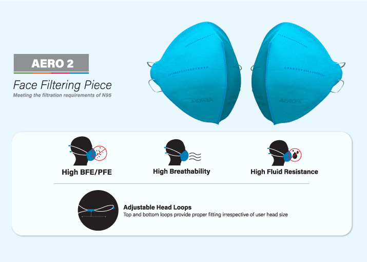
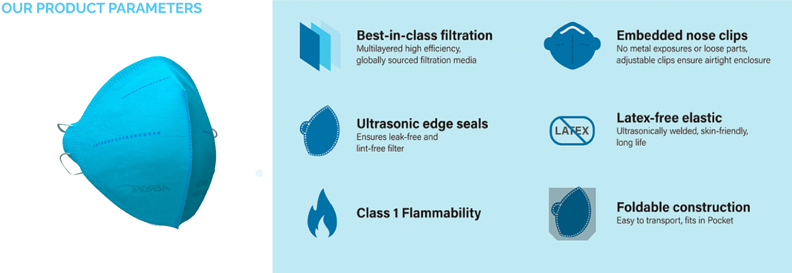
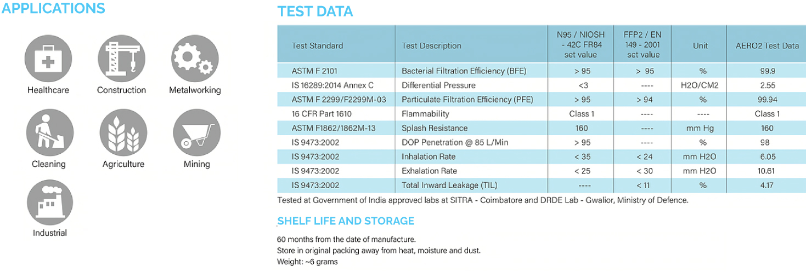

PRODUCTS WE OFFER
Aerofil India is offering high quality respirators and Surgical masks to fight the COVID -19 pandemic. This was achieved through the experience in developing high quality air filtration products for HVAC systems which has been exported globally to many countries.
Aerofil Filters India Private Limited having wide experience in Air Filtration has successfully developed an air particulate-filtering face-piece respirator that meets the NIOSH and EN149 standards, meaning that it filters at least 95% of airborne particle as well as 3ply surgical masks during initial phase of the COVID 19 crisis.The inhalation properties of the respirator is four times better than most accepted standards and this reduces the strain on the lungs of health workers and enables them to work longer hours with ease. While testing at DRDE labs, DRDO , Ministry of Defence, Govt of India, our product has achieved 98% efficiency in the stringent DOP Challenge Test which is above the requirement of NIOSH and EN149 standards with excellent breathability. The mask has qualified in the inward and outward leak test, and fluid resistance test. The. bacterial filtration efficiency achieved is 99.9 % and Particle Filtration Test is 99.91 %
AERO2 N95 is a face mask in collapsable form, pocket fit type made up of multi layered nonwoven media featuring ultrasonic welded edges for leak free operation.Progressive density meltblown filter media ensures better breathability as the mask is designed to provide optimum surface area keeping enough rigidity. An additional cord lock arrangements is provided for tightening the head loop to fit properly irrespective of the head size.
Why Respirators?
Face piece respirators which meets N95/FFP2 standards are an important PPE needed for health workers fighting against COVID 19. There is a shortage of good quality respirators and the product developed is well accepted by the health workers and is instrumental in addressing the shortage of proper quality PPE to ensure that frontline health workers do not contract the infection. India requires about 27 million respirators according to the government. There are a plethora of products in the market imported from China and also manufactured by local manufacturers which are not tested with the most stringent tests like the NACL or DOP Challenge and hence may not be able to stop the virus aerosol from entering through the mask There has been multiple instances of healthcare workers getting infected due to lack of high quality PPE. (Click Here) Our product has been mentioned by the Chief Minister of Kerala, Shri Pinarayi Vijayan (Click Here).
 